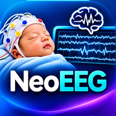

Neonatal EEG and aEEG training: primer, electrode placement, the EEG-to-aEEG pipeline, maturation by postmenstrual age, background classification, seizures, artefacts, hypothermia, cases and a pattern atlas.
Learn to read neonatal EEG and aEEG in short, hands-on steps. Follow the path below from top to bottom, or jump to anything.
Waveform amplitudes, interburst intervals, burst durations and background categories are calibrated to published reference values: interburst interval by postconceptional age and the five-category background classification (continuous normal voltage / discontinuous normal voltage / continuous low voltage / burst suppression / flat trace) from Hellström-Westas, Rosén & de Vries, An Atlas of Amplitude-Integrated EEGs in the Newborn; burst/interburst duration and delta-wave amplitude-frequency maturation from Okumura & Kidokoro, Neonatal EEG Atlas and Interpretation. Electrode positions follow the standard 10-20 layout and the modified neonatal montage described in the unit's Natus video-aEEG guideline. Neonatal maturation rules of thumb (postmenstrual-age definition, emergence of states, tracé discontinu vs alternans, transient timelines, EEG-reading interburst limits) are paraphrased from Learning EEG (learningeeg.com, © David Valentine MD); no images from that site are reproduced. Where its EEG-reading limits differ from the atlas-derived aEEG tables, both are shown. Raw traces are procedurally generated for pattern recognition, not real recordings (real images, where shown in the Pattern Atlas, carry their own credit), and the display is time-accelerated (~4×) so multi-second interburst intervals are visible in a short clip.
Each trace is generated, passed through the same 2nd-order 2–15 Hz band-pass → rectify → smooth → 3 s peak-detect pipeline the display uses, and its lower/upper margins measured over 30 simulated minutes with a seed not used for fitting. Targets: Hellström-Westas & Rosén & de Vries, Atlas of aEEGs in the Newborn 2nd ed., Figure 2.9 (values read from the chart, ±1 µV), Tables 2.1 and 2.2, and Al Naqeeb. Preterm values below 30 weeks are qualitative (Table 2.2: discontinuous, lower <5 µV, upper >10 µV).
| Quiet sleep, by PMA — lower / upper margin (µV) | |||
|---|---|---|---|
| PMA | Atlas | Simulated | |
| 24 wk | 1 / 20 | 1.0 / 23.4 | ✓ |
| 26 wk | 1.2 / 20 | 1.2 / 21.8 | ✓ |
| 28 wk | 1.6 / 22 | 1.6 / 24.8 | ✓ |
| 30 wk | 1.8 / 19 | 1.8 / 21.5 | ✓ |
| 32 wk | 2.3 / 20 | 2.4 / 19.2 | ✓ |
| 34 wk | 2.7 / 24 | 2.7 / 23.6 | ✓ |
| 36 wk | 4.3 / 28 | 4.4 / 25.7 | ✓ |
| 38 wk | 7.2 / 19 | 6.9 / 40.1 | lower ✓, upper high |
| 40 wk | 8 / 20 | 8.0 / 46.0 | lower ✓, upper high |
| Active sleep / wake (narrowest band) | |||
|---|---|---|---|
| PMA | Atlas | Simulated | |
| 30 wk | 6 / 19 | 6.4 / 18.8 | ✓ |
| 32 wk | 6.3 / 18 | 6.6 / 19.2 | ✓ |
| 34 wk | 6.7 / 17 | 7.0 / 20.5 | ✓ |
| 36 wk | 7.4 / 17.5 | 7.9 / 22.7 | ✓ |
| 38 wk | 7.2 / 10.5 | 7.4 / 19.5 | upper above Fig 2.9, inside Table 2.2 |
| 40 wk | 8 / 10.5 | 8.3 / 21.3 | upper above Fig 2.9, inside Table 2.2 |
| Five categories (Table 2.2) | |||
|---|---|---|---|
| Category | Criterion (µV) | Simulated | |
| CNV | lower 5–10, upper 10–50 | 7.9 / 22.5 | ✓ |
| DNV | lower <5, upper >10 | 2.0 / 26.2 | ✓ |
| CLV | around or below 5 (upper ≲7) | 2.5 / 6.4 | ✓ |
| BS | lower 0–2, bursts >25 | 0.3 / 39.5 | ✓ |
| FT | <5 µV | 1.2 / 3.6 | ✓ |
| Interburst interval, seconds (Table 2.1) | ||||
|---|---|---|---|---|
| PMA | Mean (atlas) | Mean (sim) | Max (atlas) | Max (sim) |
| 24 wk | 18 | 17.7 | 45 | 44.8 |
| 26 wk | 12 | 12.1 | 40 | 39.7 |
| 28 wk | 11 | 11.1 | 35 | 34.8 |
| 30 wk | 10.5 | 9.9 | 30 | 29.8 |
| 32 wk | 9 | 8.7 | 20 | 19.9 |
| 34 wk | 7 | 7.4 | 10 | 10.0 |
| 36 wk | 7 | 6.3 | 10 | 10.0 |
| 38 wk | – | 3.9 | 6 | 6.0 |
| 40 wk | – | 2.9 | 6 | 6.0 |
Known limits: at 38–40 weeks the quiet-sleep upper margin (~40–46 µV) and the active-sleep upper margin (~20 µV) are wider than the Figure 2.9 polygon but inside the Table 2.2 / Al Naqeeb normal ranges (continuous upper 10–25, up to 50 µV). At 34 weeks the attenuated periods measure ~15 µV peak-to-peak, below the ≥25 µV rule for tracé alternans (a transitional age). Raw amplitudes are model values chosen to reproduce the aEEG margins; they are not measured EEG recordings.
Drag each electrode onto the correct scalp position for the selected montage, then check your placement. Positions use the standard 10-20 layout as a teaching schematic — real bedside placement is measured from the head circumference and nasion–inion/tragus distances, as in the unit's own electrode-siting protocol.
The raw EEG (top) scrolls continuously. The aEEG (bottom) is the same signal passed through a causal ~2–15 Hz band-pass filter, rectified, smoothed into an amplitude envelope, and peak-detected over short epochs, then displayed on a semilogarithmic amplitude scale (linear 0–10 µV, logarithmic 10–100 µV) over a heavily time-compressed axis. Because the filter attenuates the very low-frequency, high-voltage delta activity that dominates preterm raw EEG, the aEEG trace is not simply a compressed copy of the raw peak-to-peak voltage — watch how the relationship between the two panels changes as gestational age changes below.
Interburst interval shortens and burst amplitude falls (while burst frequency rises) with maturation. Figures are drawn from the reference IBI-by-PMA table and Okumura's pattern-by-PMA descriptions. Click a card to load it into the simulator above.
Five background categories used to grade severity of encephalopathy on aEEG (Hellström-Westas et al.). The simpler bedside rule of Al Naqeeb et al. classifies term aEEG as normal (upper margin >10 µV, lower >5 µV), moderately abnormal (upper >10 µV, lower <5 µV), or suppressed (upper <10 µV, lower <5 µV). Click each card for full criteria.
An electrographic seizure is a rhythmic discharge that evolves in frequency, amplitude and/or location and is sustained long enough to be clearly abnormal — here shown building, peaking, then decrementing, often with brief post-ictal suppression. Ten cases mix seizures, artefact and normal background.
Anything on the trace that is not brain activity is artefact: it ignores localisation, and some types can mimic seizures. Identify the artefact (or confirm a clean trace) in each case, then read the recognition features and the bedside fix. Mains frequency is 60 Hz in the USA and 50 Hz in much of the rest of the world; a notch filter removes it but can slightly distort sharp transients, so it is used judiciously.
Move through the cooling course and compare how mild, moderate and severe encephalopathy evolve on aEEG background category and sleep–wake cycling, using the same amplitude bands as the classification tab.
Six short scenarios. Choose the best-supported interpretation.
Read this first. It follows the teaching order of the Learning EEG neonatal chapter (paraphrased, with original interactive tools and questions) so that the later modules make sense: age, recording conventions, what is expected at each age, and which transients are normal.
A neonate is a baby under four weeks old. What is normal changes from week to week, so findings are judged against PMA — the gestational age at birth plus the time since birth — not chronological age.
Bars show when each feature is expected. The dashed bar's start is not specified by the source. Red line = the PMA chosen above.
Discontinuity — flat or low-voltage gaps between bursts (interburst intervals, IBI) — is normal in early neonates, but the longest acceptable gap shrinks steadily with age. Enter an IBI you measured and pick the reference you want to judge it against.
The two sources are not identical, especially around 28–32 weeks. The simulator draws traces from the atlas-derived table; this checker lets you see how the verdict changes with the reference.
Both show bursts separated by quieter periods. They differ in the amplitude of those quieter periods: below about 25 µV in tracé discontinu (typical 30–34 weeks PMA), 25 µV or more in the more mature tracé alternans (from about 34 weeks), which later evolves into slow-wave sleep from about 38 weeks. The two traces below use the same amplitude scale and the dashed lines mark 25 µV peak-to-peak.
Neonatal transients are normal waveforms that can look abnormal to an adult-trained eye, and many are age-specific (see the timeline above).
See all of these as synthetic traces in the Pattern Atlas.
A browsable atlas grouped by quiet sleep, states, transients, abnormal backgrounds, artefacts and seizures. Cards marked SYNTHETIC are generated teaching traces that scroll live; a card marked REAL IMAGE shows a recording image with its credit. Use “＋ Add image” on a card to attach your own or licensed EEG image (kept on this device only). Single-channel display only, so features that depend on topography (synchrony, multifocality) are described rather than shown.